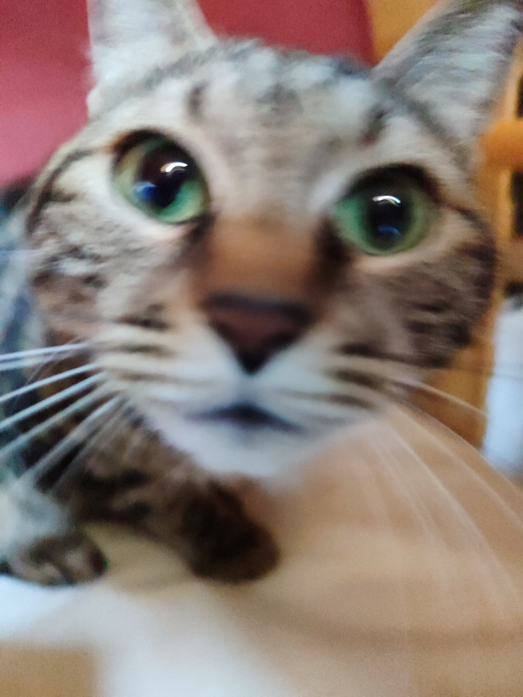

<!DOCTYPE html>
<html lang="en">
<head>
    <meta charset="UTF-8">
    <meta name="viewport" content="width=device-width, initial-scale=1.0">
    <title>Document</title>
    <link rel="stylesheet" href="style.css">
</head>
<body>
    
</body>
</html>
<div class="examples">
    #box-shadow
    ##Box-shadow. CSS-свойство box-shadow добавляет тень к элементу. Через запятую можно задать несколько теней. Тень описывается смещениями по оси X и Y относительно элемента, радиусом размытия и распространения, а также цветом. Интерактивный пример. Свойство box-shadow включает отбрасывание тени от границ практически любого элемента. Если для элемента с тенью задан border-radius, то отбрасываемая тень также будет с закруглёнными углами.
    ###примеры 
    1 <button class="button" style="box-shadow: 10px 5px 5px black;"></button>
    2 <button class="button" style="box-shadow: inset 0 2px 0px #dcffa6, 0 2px 5px #000;"></button>
    3  <button class="button" style="box-shadow: inset 0px 0px 10px rgba(255, 0, 0, 0.6);"></button>
    #text-shadow
    ##CSS-свойство text-shadow добавляет тени к тексту. Свойство задаётся разделённым запятыми списком теней, которые будут применены к тексту и к любым его свойствам decorations. Любая тень описывается комбинацией смещений по осям X и Y относительно элемента, радиусом размытия и цветом.
    ###примеры 
    1 обводка текста <span style="text-shadow: 1px 1px 2px red;">wurvhsur</span>
    2 тень <span style="text-shadow: rgb(161, 168, 34) 1px 0 10px;">hvbehsabdcv</span>
    3 раздвоение <span style="text-shadow: 5px 5px #000000;">shjdhv</span>
    #cursor
    ##SS-свойство cursor устанавливает курсор мыши, если таковой имеется, для отображения, когда указатель мыши находится над элементом.
    ###примеры 
    1 <span style="cursor: help;">help</span>
    2 <span style="cursor: wait;">wait</span>
    3 <span style="cursor: crosshair;">crosshair</span>
    4 <span style="cursor: not-allowed;">not-allowed</span>
    5 <span style="cursor: grab;">grab</span>
    6 <span style="cursor: zoom-in;">zoom-in</span>
    #transition
    ##CSS transitions предоставляют способ контролировать скорость анимации, при изменении CSS-свойств. Вместо того, чтобы свойство применилось сразу, вы можете сделать это действие происходящим в течение какого-то момента времени. Например, если вы смените цвет элемента с белого на чёрный, изменение произойдёт моментально, а вот с CSS transitions, изменения произойдут за временные интервалы, следующих кривой ускорения, все из которых могут быть настроены.

    Анимации, составляющие переход между двумя состояниями, часто называют неявными переходами, так как промежуточные состояния в период между начальным и конечным состоянием неявно определяются браузером.
    ###примеры
    1 
    2 
    3 
</div>
